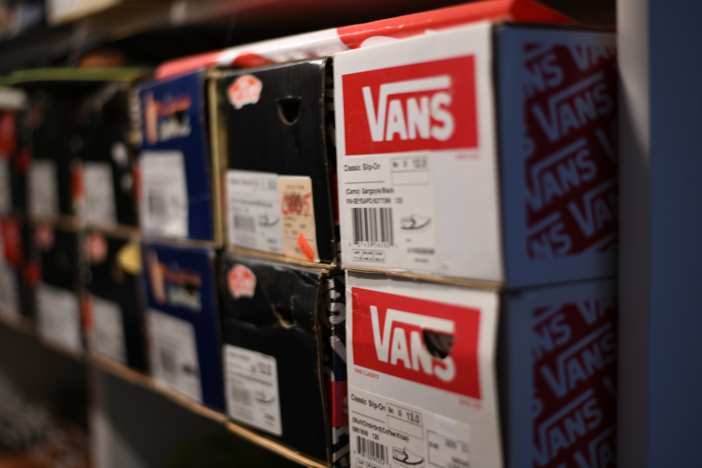

반스
반스 소개
반스 종류
반스 추천
반스 소개

본래 이름은 "Van Doren Rubber Company"로, 미국 동부의 스니커즈 사업가인 폴 반 도렌이 설립하였으며 1966년 3월 16일[1] 캘리포니아 남부 애너하임 이스트 브로드웨이 704번지에서 첫 VANS Shoe Store를 개장하면서 글로벌 브랜드로서의 그 초석을 다졌다.
1960년대 말과 1970년대를 맞으면서 미국은 사회전반적인 정신적 지체를 겪었다. 이때 반스는 스케이트보더들의 정서와 맞아떨어지면서 조금씩 유명해지기 시작했다. 그들은 자신들의 즉흥적이며, 독창적인 개성을 표현해줄 도구로 반스를 선택했다.
또, 반스는 주목받지 못한 그들의 생활 양식을 존중했으며 그들이 원하는 디자인과 기능을 제품에 즉각 반영했다.